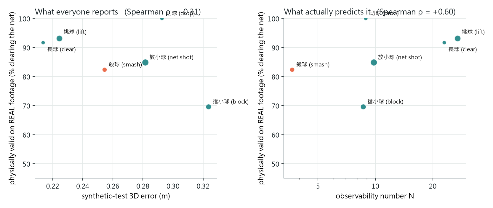

SimTrack3D: Monocular 3D Trajectory Prediction of Fast-Moving Shuttlecocks via Broadcast-Calibrated Sim-to-Real Transfer
Project page · 2026

Demo
Abstract
2D shuttlecock tracking is defined by two extremes — the target is small (6.9 px across in a 1280-wide broadcast, textureless) and fast (record smashes exceed 400 km/h). Lifting those detections to 3D inherits both and adds a third. Small kills the apparent-size cue monocular depth normally uses; fast leaves a smash only about 15 frames of nearly straight image track; and unlike a tennis or table-tennis ball the shuttle never bounces, so there is no contact with a known plane to anchor either the reconstruction or a ground-truth dataset. No public 3D ground truth exists for broadcast badminton, and 3D errors of up to 46× hide inside 0.2 px of reprojection residual.
With no appearance cue and no landing anchor, the only things that determine where the shuttle is are aerodynamics and how players actually hit. SimTrack3D puts both into a sim-to-real pipeline built around real broadcast geometry rather than assumed geometry. Cameras are measured: the court plane leaves the focal length undetermined, so we take it from the net cord and calibrate ten real broadcasts end to end, gating each on the cord's catenary sag — a physical invariant the fit never sees. Trajectories are anchored: every synthetic stroke inherits the start point, end point and flight time of a real annotated stroke, and only the unobserved height profile is solved, as an aerodynamic boundary-value problem under quadratic drag. This yields 78,702 physically valid 3D strokes in the geometry of real matches, from which we train Shuttle3D, a 2.7M-parameter ray-depth transformer that lifts a monocular 2D track to a 3D trajectory, followed by a physics refinement that returns the nearest single-launch-state flight.
Shuttle3D reaches 0.24 m median 3D error on held-out synthetic strokes and 85.0% physical validity on real TrackNetV3-tracked rallies, against 55.6% for a faithful re-implementation of MonoTrack's per-shot physics fit on identical tracks and cameras; refinement raises validity to 99.3%. Finally we derive an image-computable observability number N that predicts the Cramér–Rao bound (CRLB ∝ N−0.98, R² = 0.83) and, with it, say precisely when the sim-to-real prior rather than the image is producing the answer: the model beats the unbiased bound by up to 5.5× exactly where N is lowest, and it is N — not the synthetic test error the field reports — that predicts which strokes survive on real footage.
- A broadcast-calibrated sim-to-real pipeline for badminton. Ten real broadcast cameras recovered from court lines and the net cord alone, each gated on cord sag; 78,702 3D strokes generated by solving quadratic-drag boundary-value problems anchored to 13,117 real annotated strokes, and rendered through those measured cameras. Simulation inherits real match geometry and real tactical distributions instead of sampling both.
- Shuttle3D, a monocular ray-depth lifter with physics refinement. A 2.7M-parameter transformer predicts depth along per-frame viewing rays, so calibration stays in the geometry rather than being relearned; a six-parameter launch-state fit then returns the nearest physically possible flight. 0.24 m median synthetic error, 85.0% real-footage validity (99.3% after refinement) against MonoTrack-style fitting at 55.6%.
- An observability theory that certifies the transfer. 3D errors of up to 46× hide inside 0.2 px of reprojection residual, so the field's real-footage metric cannot rank methods. The observability number N is computable from the image alone, predicts the Cramér–Rao bound, and identifies where a learned prior — not the image — is supplying the depth, which is exactly where sim-to-real transfer is fragile.
1. Small, fast, and never touching the ground
TrackNet and its successors defined 2D shuttle tracking by two extremes: the target is exceptionally small and exceptionally fast. Both properties carry into 3D, where each removes a different source of depth information, and a third property of badminton removes what is left.
Small removes the appearance cue. Monocular 3D systems for cars, people or furniture read depth from apparent size and from how a shape deforms across the frame. In our measurements the shuttle spans 6.9 px in a 1280-wide broadcast, stretching to 17 px only as a motion streak; it carries no texture and no resolvable shape. Geometrically it is a point mass, so no single frame contains depth information at all — depth exists only in how the point moves.
Fast removes the motion cue. What makes the motion informative is that gravity and drag bend the flight, and the bend shows up in the image. A smash gives about 15 frames at 30 fps, travelling nearly along the viewing direction, so the projected track is close to a straight line and the bend is buried in tracker noise. Sec. 9 makes this quantitative; Fig. 1 shows the consequence.

Never bouncing removes the anchor. A tennis or table-tennis ball touches a known plane in the middle of its flight, which fixes one 3D point exactly; systems such as TT3D are built on that contact, and so are the datasets that supervise them. A shuttle is airborne from racket to racket, and its only floor contact ends the rally — a moment where trackers routinely lose it. There is therefore neither a mid-flight constraint nor a practical route to real 3D labels.
This cannot be trained away with ordinary supervision, because the data does not exist: the field's own systems (MonoTrack, CVPR-W 2022; SynthNet, MMSports 2024; Uplifting Table Tennis, WACV 2026) state that no 3D ground truth is available for broadcast video, and validate real footage with the reprojection error Fig. 1 shows to be blind. Simulation is the only available source of 3D truth — which makes the fidelity of the simulator, and the ability to tell when its prior is being leaned on rather than the image, the whole problem. That is what SimTrack3D is built to address.
2. Related work
Monocular ball trajectory reconstruction. Recovering a projectile's 3D path from one stationary view is classically posed as fitting a motion model until its projection matches the image track; [Ribnick 2009] established the minimum conditions under which that fit has a unique solution. Sport-specific systems follow the same recipe: MonoTrack [Liu & Wang 2022] fits per-stroke shuttle flights in badminton, TT3D [Gossard 2025] searches for the table-bounce state that minimises reprojection error, and a real-time football system [Vorobev 2025] fits a multi-mode state model to broadcast video. Badminton is the hard case here: the shuttle never bounces, so the mid-flight anchor TT3D relies on does not exist, and MonoTrack reports that no 3D ground truth is available for its footage.
Ribnick et al., TPAMI 2009 · MonoTrack, CVPRW 2022 · TT3D, CVPRW 2025 · Where Is The Ball, CVPRW 2025 · Vorobev et al., 2025
Synthetic data and learned lifting. A second line replaces the physics fit with a network trained on simulated trajectories. [Kienzle 2024] learns 3D localisation from 2D labels plus the physics of motion; SynthNet [Ertner 2024] trains a tennis lifter on purely synthetic data; [Kienzle 2025] and Uplifting Table Tennis [Kienzle 2026] train transformers on 140,000 MuJoCo trajectories and transfer to broadcast table tennis; TT4D [Rahmanian 2026] scales the same lifter to 140 hours of reconstructed play. Three properties are shared. These models consume 2D coordinate sequences rather than rendered images — synthetic sports imagery exists [Qin 2025] but targets detection. Camera parameters are sampled from assumed ranges. And real footage is evaluated by 2D reprojection error, because, as Uplifting states, no 3D ground truth exists for realistic broadcast video. We found no pipeline of this kind for badminton.
Kienzle et al., 3DV 2024 · SynthNet, MMSports 2024 · Kienzle et al., CVPRW 2025 · Uplifting Table Tennis, WACV 2026 · TT4D, 2026 · SoccerSynth-Detection, 2025
Broadcast camera calibration. Field registration from painted lines is mature for large pitches [Gutiérrez-Pérez & Agudo 2026], and [Magera 2024] argues that a calibration should be scored by reprojecting 3D objects rather than by planar-homography metrics. A badminton court offers less: it is small, and its usable structure is coplanar, which leaves the focal length undetermined — on this data the two Zhang constraints disagree by 65%, and TT4D's table-corner PnP with unknown focal length is the same configuration. We take the missing degree of freedom from the net cord, and gate the result on the cord's sag, a physical invariant the fit never sees.
PnLCalib, CVIU 2026 · Magera et al., 2024 · KaliCalib, 2022
Small fast balls in 2D. Heatmap trackers [Huang 2019; Chen & Wang 2023; Tarashima 2023] are the standard front end, and we use TrackNetV3 as ours. Blur is usually damage to be tolerated, although BlurBall [Gossard 2025b] labels the streak centre and predicts its length and orientation as velocity evidence. Our measurements agree that the streak carries information, and add that whether it does is a property of the individual broadcast: the streak-length-to-image-speed slope varies 8.8× across the matches we measured.
TrackNet, AVSS 2019 · TrackNetV3, MMAsia 2023 · WASB, BMVC 2023 · BlurBall, CVPRW 2026
This work occupies the intersection these lines leave empty. It is a sim-to-real pipeline for the fast, non-bouncing shuttle: cameras are measured from the broadcasts themselves rather than sampled from assumed ranges, synthetic strokes are anchored to real annotated ones, and the two together yield 3D data close enough to real play to train a single-camera 3D trajectory predictor — while the 3D truth only the synthetic side can supply is what lets us test whether the metric the field relies on can certify a reconstruction at all.
3. The sim-to-real pipeline
Prior synthetic pipelines sample a camera from an assumed range and a trajectory from a physics engine, then hope the gap to broadcast footage is small. We close both halves against the broadcast itself: the camera is measured from the video, and the trajectory inherits a real stroke's endpoints and duration, leaving only the unobserved height profile to physics.
3.1 Measuring the camera from the court and the net
A ground-plane homography cannot recover the intrinsics — on this data the two Zhang constraints disagree by 65%. It pins down everything on the floor and nothing above it, and the missing degree of freedom is exactly the vertical one a trajectory is made of. The net supplies it: a structure of known height (1.55 m at the posts, sagging to 1.524 m at centre) at a known court position, spanning the image as a near-straight line that can be located to sub-pixel precision.
We locate the painted court lines (sub-pixel ridge, 167–312 samples per image) and the net cord (270 samples, 0.14 px fit residual), then fit a rigid pinhole camera to court + net in a right-handed frame. The court plane alone would fit any camera exactly — a plane-to-image map is an 8-DoF homography — so the off-plane net is what makes the calibration determined. The cord's sag is deliberately withheld from the fit and used afterwards as an independent physical check.


3.2 Strokes anchored to real annotations
Every training stroke is tied to one real annotated stroke: its start and end court positions and its flight time come from the ShuttleSet-format labels (13,117 anchored strokes, 17 matches). Only the height profile — the one quantity never observed — is synthesised, by solving a boundary-value problem under quadratic drag (terminal velocity 6.8 m/s, RK4) for the launch velocity that carries the shuttle from one annotated point to the other in the annotated time. 99.8% of 24,000 solves converge, and 98.9% of the resulting trajectories clear the net although the solver never sees it — an independent check that anchoring to real strokes produces real flights. Because the anchors are real strokes, the shot-type mix, the speeds and the court coverage are the tournament's, not a designer's.
Strokes are then projected through the ten measured cameras with 2 px tracker noise and 5% dropout, giving 78,702 samples, split by anchor so that no real stroke appears on both sides of the split. The same camera model drives Blender for image-space work (Fig. 2b), so trajectories, renders and the calibration all live in one geometry.
3.3 Shuttle3D: the monocular ray-depth lifter
A 2.7M-parameter transformer receives, per frame, the world-space viewing ray through the detection, the ray's floor intersection, a near-horizontal flag and time, plus the camera centre; it predicts relative depth along each ray, and the 3D point is recovered geometrically. Calibration therefore lives in the geometry rather than being relearned, which is what lets one model serve cameras from 12 to 39 m away. Depth, not height, is the output: 1.9% of frames look up at the shuttle from these 5–13 m cameras, and a height parameterisation diverges there.
4. What real broadcast cameras actually look like
Because the cameras are measured rather than sampled, the pipeline produces a distribution that can be compared with the ranges other synthetic pipelines assume. They do not overlap.

| Quantity | min | median | max |
|---|---|---|---|
| focal length (px, 1280-wide) | 1623 | 2745 | 3756 |
| camera height (m) | 4.9 | 7.5 | 13.3 |
| distance to court centre (m) | 12.0 | 25.6 | 38.7 |
| elevation (°) | 9.9 | 15.7 | 20.5 |
| net-cord sag, measured (spec 26 mm) | 16.0 | 23.5 | 33.4 |
Three quality gates select the ten: net-cord residual <1 px, sag within 10 mm of specification, and far-baseline depth resolution ≥12 px/m. The sag gate catches failures the fit residual misses — three venues fitted the cord to 0.2–0.4 px yet implied sags of 9, −15 and −49 mm. A fit residual proves you fitted something; only an independent physical invariant proves you fitted the right thing.
5. Shuttle3D on held-out synthetic strokes
Trained on the anchored dataset and tested on strokes whose anchors were never seen, Shuttle3D reaches 0.364 m mean / 0.244 m median 3D error, with a 0.074 m height error. The baselines available without depth are far away: assuming a constant depth gives 2.04 m, assuming the shuttle is on the floor gives 9.66 m.
Splitting by anchor matters more than it sounds: one real stroke is replayed through several cameras and heights, so a random split would put near-duplicates on both sides and inflate the result. Section 9 returns to this number with the Cramér–Rao bound and shows which part of it is the image and which part is the prior.
6. Physics refinement: one launch state per stroke
The lifter predicts one depth per frame with no temporal coupling, so its 3D track jitters and does not look like a flight (grey dots below). Refinement replaces it with the nearest physically possible trajectory: a single launch position and velocity, integrated under the quadratic-drag model of §3.2, fitted per stroke to (a) the observed 2D track — reprojection residual, σ = 2 px — and (b) the lifter's 3D estimate as a soft prior (σ = 0.5 m, Huber), plus two one-sided constraints that hold for every stroke a rally continues from: the path clears the net cord where it crosses the net plane, and never goes below the floor. The image fixes the lateral geometry and the shape of the arc; the prior fixes the depth scale a short arc cannot determine. Six parameters, a batched finite-difference Jacobian, well under a second per stroke.

| held-out synthetic (n = 400) | 3D error, median / mean (m) | jitter (m/frame²) |
|---|---|---|
| ground truth | — | 0.042 |
| lifter | 0.254 / 0.365 | 0.099 |
| physics only — no prior, fixed drag, lifter initialisation | 0.300 / 0.608 | — |
| lifter + physics | 0.220 / 0.318 | 0.043 |
| + net and floor constraints | 0.221 / 0.320 | — |
| + per-stroke drag coefficient | 0.232 / 0.337 | — |
The per-type split previews §9. On lifts (N ≈ 27) physics alone beats the lifter (0.104 vs 0.202 m): where the image says enough, no prior is needed. On smashes (N ≈ 4) physics alone gives 1.117 m, next to the Cramér–Rao bound of 1.23 m, and the prior brings it to 0.230 m. Refinement is where the two combine, cutting the synthetic median error by 13%.
7. Real footage
Real rallies were tracked with TrackNetV3 (best checkpoint, 0.940 validation accuracy; detection 9–92% per venue) and lifted with the same model through the same calibrated cameras. There is no 3D truth, so the reconstruction is scored against what the annotation and physics do know: every stroke must clear the net, and both ends of every stroke carry an annotated court position — a real horizontal anchor the model never sees.
| real tracked strokes (n = 177, no 3D truth) | clears the net | endpoint error, median / p90 (m) | start error (m) | jitter (m/frame²) |
|---|---|---|---|---|
| lifter | 85.0% | 0.76 / 3.71 | 1.00 | 0.123 |
| lifter + physics | 76.1% | 0.90 / 6.45 | 1.38 | 0.034 |
| + net and floor constraints (used in the demo) | 99.3% | 0.86 / 4.29 | 1.37 | 0.033 |
| + tighter prior (σ = 0.25 m) | 98.6% | 0.78 / 3.70 | 1.17 | 0.030 |
| + per-stroke drag coefficient | 99.3% | 0.85 / 3.70 | 1.18 | 0.031 |
| MonoTrack-style fit (§8) | 55.6% | 3.30 / 13.27 | 3.07 | — |
Two things should be said plainly about refinement here. The synthetic gain does not transfer: on real footage it leaves the endpoint error where the lifter had it (0.76 → 0.78–0.86 m median). The synthetic strokes were generated by the same drag model the refinement assumes — an inverse crime — and a real shuttle, tracked by a real detector at 4 px residual, is not that model; fitting the drag per stroke recovers the terminal velocity to 0.4 m/s on synthetic data and changes nothing on real data. What refinement does buy is plausibility: every stroke becomes a possible flight, 99% clear the net, and the jitter matches the truth's, at no cost in accuracy. Net validity for the constrained variants is partly definitional — the constraint enforces it — which is why the unconstrained lifter's 85.0% is the number we compare against MonoTrack, and why plausibility and accuracy are reported separately throughout.
Calibration is not the limiting term. At the endpoint the depth ambiguity vanishes (the shuttle is on a known plane), so calibration becomes the leading camera-side error — and it still inflates the endpoint error by only 3–7%. The endpoint error is set by depth, not by the camera: 0.76 m is an order of magnitude more than 1.7 px of calibration error can produce anywhere on the court.
8. Comparison with MonoTrack-style physics fitting
MonoTrack reconstructs each shot by fitting launch position, velocity and a per-shot drag coefficient under forward-Euler quadratic drag, minimising an L6 reprojection loss with SLSQP. We re-implemented that step from its public code and ran it on the same 2D tracks and the same calibrated cameras as the lifter — the comparison the paper needs is the 3D-from-2D step on identical input. Deviations from the original (no hit detector, so each annotated stroke is one shot; the receiving-player drift term is dropped) are documented in the baseline's source.
| stroke type | n | lifter (m) | MonoTrack-style fit (m) | ratio |
|---|---|---|---|---|
| 長球 clear | 22 | 0.140 | 0.277 | 2.0× |
| 挑球 lift | 97 | 0.202 | 0.759 | 3.8× |
| 殺球 smash | 43 | 0.246 | 2.309 | 9.4× |
| 切球 drop | 23 | 0.251 | 0.847 | 3.4× |
| 放小球 net shot | 82 | 0.284 | 1.086 | 3.8× |
| 擋小球 block | 55 | 0.340 | 0.968 | 2.8× |
| all (median / mean) | 400 | 0.254 / 0.365 | 1.018 / 1.365 | 4.0× |
On real footage the same comparison gives 85.0% vs 55.6% physical validity and 0.76 m vs 3.30 m median endpoint error — a gap of 29 percentage points in validity. The mechanism is visible in the table: the physics fit is worst exactly where the arc is shortest, and on smashes its 2.31 m sits above the 1.23 m Cramér–Rao bound, as an unbiased estimator must, while the lifter's 0.25 m sits below it. The two methods bracket the bound from opposite sides. That is not evidence that the lifter extracts more from the image; it is evidence that sim-to-real training supplied a prior over real shot distributions which per-shot optimisation, starting from scratch on every stroke, does not have.
Both methods consumed identical TrackNetV3 tracks and identical calibrated cameras. The baseline reproduces MonoTrack's reconstruction step but not its hit detector or receiving-player term, so each annotated stroke is fitted as one shot; MonoTrack's full pipeline may do better on its own segmentation. Its real-footage numbers are consistent with what its authors reported being unable to measure.
9. Observability: when the prior, not the image, is answering
A sim-to-real model that reports a low error on synthetic test data has proved only that it learned the simulator's distribution. To say more, we need a quantity that separates what the image determines from what the prior supplies — computable without 3D truth, so that it also works on real footage.
A constant-velocity 3D motion projects to a straight image line whose arc-length runs as a Möbius function of time. Fitting that model to the observed track and taking the residual — in units of the 2D noise — isolates exactly the signature that gravity and drag leave in the image. We call it N. It uses no 3D information at all.

With the bound in hand, the lifter's synthetic error decomposes. It sits honestly above the bound where N is high and below it where N is low — and beating an unbiased bound is only possible by being biased, which for a sim-to-real model means the training distribution is answering.

The consequence is a practical diagnostic for sim-to-real transfer, and it is testable: if the prior is doing the work where N is low, then real-footage validity should follow N and not the synthetic test error. It does.

| stroke type | N | CRLB (m) | synthetic test (m) | real: clears net |
|---|---|---|---|---|
| 殺球 smash | 3.7 | 1.232 | 0.255 | 82.4% |
| 擋小球 block | 8.6 | 0.583 | 0.324 | 69.6% |
| 放小球 net shot | 9.8 | 0.619 | 0.282 | 84.8% |
| 切球 drop | 8.9 | 0.458 | 0.293 | 100.0% |
| 長球 clear | 23.0 | 0.160 | 0.214 | 91.7% |
| 挑球 lift | 27.0 | 0.183 | 0.225 | 93.1% |
Raw endpoint errors per type are confounded by where the stroke ends — the court resolves at 8.8 px/m near the far baseline and 110 px/m near the camera — so net clearance is the per-type metric here. Read together, Figs. 5–7 say that N is the quantity to report alongside any monocular 3D result: it is available on the footage you actually care about, before any reconstruction exists.
10. Interactive 3D model
The calibrated court, net, broadcast camera frustum and forty reconstructed trajectories, exported from Blender. Drag to orbit, scroll to zoom.
11. Limitations
Real-footage validation rests on proxies: net clearance and annotated court positions at stroke ends. Rally-final floor landings — the one true 3D anchor — were unusable because the tracker loses the shuttle as it lands (0 of 10 candidates with ≥5 detections); tracking more of the 1,936 available rallies is the direct fix. Tracker coverage limited the real set to 177 of 9,875 candidate strokes, from 8 of the 10 calibrated matches. An earlier evaluation pass packed tracked frames contiguously instead of placing them at their true frame indices as in training; it reported 79.9% validity and 0.87 m, the corrected pass reported here gives 85.0% and 0.76 m — both are in the project logs, and the difference is the packing, not the model. The self-calibration residual sits at 1.65 px, decomposed as 1.06 px of court-detection inconsistency plus 0.61 px from reconciling the net; lens distortion, line placement and camera drift were each tested and ruled out (lines straight to 0.12 px, drift 0.04 px, line offsets 1.2 mm median). The net tape sits a measured 15 mm below the nominal cord height, consistently across venues. Finally, the simulator's shuttle is a point mass with a constant drag coefficient: it has no skirt deformation, no post-impact flip, and its noise model is Gaussian rather than the structured failure of a real tracker.
12. Future work
The open problems follow the same three properties as the method.
Fast, turned from damage into a measurement. Motion blur is treated as noise by 2D trackers, but the streak's length is the shuttle's image displacement during the exposure — a velocity measurement inside a single frame, exactly where the trajectory is least observable. We measured that the streak-length-to-image-speed slope is a property of the individual broadcast, varying 8.8× across venues, so it must be self-calibrated per video rather than assumed. Feeding local image patches to the lifter alongside the coordinates would inject that velocity constraint into short smash arcs directly. A first end-to-end version — the TrackNetV4 backbone with a depth head, trained on physics-refined 3D labels — is running now.
Small, and the jitter it causes. A 6.9 px target means a one-pixel wobble in the heatmap centre is a large fraction of the object, and along a ray 30 m from the camera that pixel becomes tens of centimetres. Synthetic observations currently carry Gaussian 2 px noise and 5% random dropout, which is not how a real tracker fails: detections are lost at impact, occluded by racket and player, and biased toward the leading edge of a streak. Learning that failure distribution from the tracker's own behaviour on real frames and injecting it during training targets the residual sim-to-real gap directly — the 0.76 m real endpoint error against 0.24 m synthetic.
Faster than the drag model. The generator uses quadratic drag at a fixed 6.8 m/s terminal velocity. Above roughly 300 km/h the skirt compresses and the drag coefficient varies strongly with Reynolds number, and the shuttle takes about 0.05 s to flip nose-forward after impact. A velocity-dependent drag coefficient and a flip phase would make the synthetic data honest in exactly the high-speed regime where §9 shows the prior carrying the most weight — and where the real-footage validity is lowest.
Downstream 3D analytics. With trajectories in metres, stroke height, clearance over the net and true 3D landing distributions replace the 2D top-down proxies current match analysis uses. The same reconstruction plus a neural scene representation would give a free-viewpoint replay — a player's-eye or line-judge view — from single-camera broadcast footage.
BibTeX
@misc{chang2026shuttle3d,
title = {SimTrack3D: Monocular 3D Trajectory Prediction of Fast-Moving
Shuttlecocks via Broadcast-Calibrated Sim-to-Real Transfer},
author = {Chang, Gino},
year = {2026},
note = {Project page}
}
Court and net geometry follow BWF specifications (6.10 × 13.40 m doubles court; net 1.55 m at the posts, 1.524 m at centre). Shuttle flight model: quadratic drag with 6.8 m/s terminal velocity, RK4. Tracking: TrackNetV3. Rendering: Blender 4.2. All numbers on this page come from the experiment logs of this project.